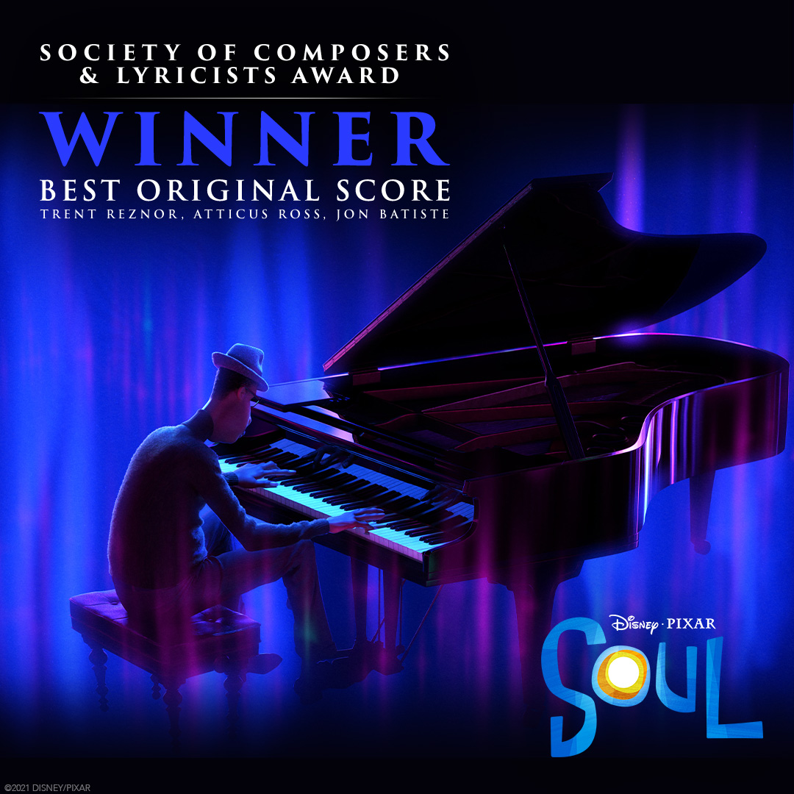

Entre una carrera en solitario y una colaboración con Pixar, el músico de 34 años es actualmente una de las figuras prolíficas del espectáculo estadounidense. El ganador del Globo de Oro a Mejor banda sonora por Soul, y nominado a los Oscar de este domingo por el mismo trabajo, habla con Culto sobre la experiencia de aquel proyecto, en medio de la promoción de su nuevo álbum de estudio.
Si se tuviera que escribir una lista con los nombres más relevantes de la temporada de premios actualmente en curso, Jon Batiste estaría dentro de ella como un candidato destacable. Todo ello por la relación que ha establecido en los últimos años con el cine y que lo embarcó en la música de la película Soul (2020), como parte de aquellos rostros menos visibles que orquestan y componen las piezas melódicas que acompañan la animación. Entre su banda Stay Human, una carrera como solista y aquella colaboración con Disney, el afroamericano de 34 años se ha hecho de un nombre en la industria del entretenimiento. Ahora con una apretada agenda, entre nuevos proyectos y encaminándose a los premios Oscar de este domingo, como parte de los nominados en la categoría de Mejor banda sonora. Y todo bajo alta expectativa: gran parte de los medios especializados lo da como triunfador, por sobre los soundtracks de Minari, Da 5 Bloods, Mank y Noticias del mundo.
“Es mi trabajo más caro”
Admite Batiste en la llamada, pero también se trataría de uno de los más personales. “Incluye muchas de las diferentes influencias musicales en el mismo lugar. Muchos tipos de géneros y también mis fuentes favoritas de composiciones que combinan todos estos. Algo que en última instancia habla de mi creencia de que no existen los géneros, la música es cultura y gente”, detalla sobre el flamante título.
Se trataría de un homenaje a sus raíces sureñas, con una suerte de misión de paz en medio.
Cuenta sobre la obra planeada en los camerinos de The Late Show with Stephen Colbert, donde es director musical.
¿De dónde nació la inspiración?
De rebuscar en el “linaje sagrado” del género, según admite. Así, exploró las obras de John Coltrane y aquellas raíces más autóctonas de grandes exponentes en Nueva Orleans, un cuna indispensable de su repertorio. Claro que también existió el espacio para nutrirse de las creaciones más contemporáneas. “Mi parte favorita fue tratar de encontrar armonías y estructuras de acordes que se fueran espirituales y celestiales. En eso también estaba el desafío de hacer que la canciones se sintieran accesibles para todas las edades, ya sea que escuches jazz o no. Y creo que eso lo logramos, cerrar una brecha y que la gente entienda gran parte de la cultura negra y de la música en general”, cuenta sobre el proceso.

Soul: Así es el filme existencialista y musical de Pixar según sus estrellas
¿hay futuro en la relación Batiste-Pixar?
Él mismo se encarga de aclarar el punto. “Sí, hemos estado hablando de muchos proyectos, definitivamente hay nuevas cosas a futuro. Dos años trabajando en ‘Soul’ hicieron que todo se sintiera muy familiar. Nos sentimos muy cerca entre nosotros y hay muchas cosas que estamos desarrollando solo a partir de esa película, es emocionante”, detalla. Ahora, con su nueva creación en las manos y embarcado en ambiciosos proyectos fílmicos cuyo eje momentáneo parece ser la confidencialidad, Batiste reflexiona que, pese a ser consciente de estar en un punto álgido de su carrera, el futuro parece ser aún más prometedor. “We are me hace sentir que tan solo estoy comenzando, que este es el principio de un gran viaje y que Dios está conmigo”.